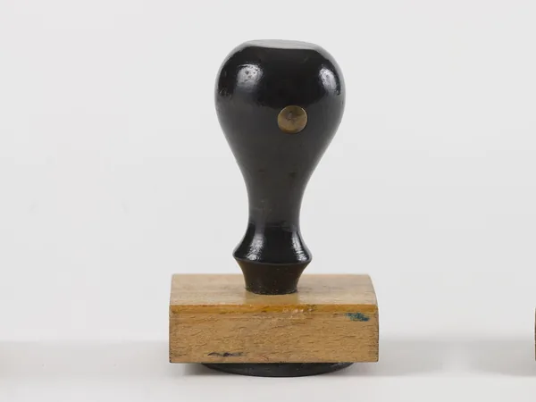
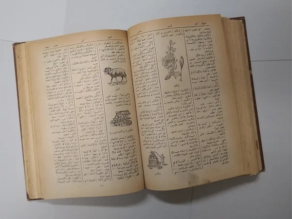

Notairesعدول الإشهاد70 Huissiers de justiceعدول التنفيذ72
Huissiers de justiceعدول التنفيذ72
Aucun résultat. Essayez un autre mot ou un autre gouvernorat.لا توجد نتيجة. جرّب كلمة أو ولاية أخرى.
Par gouvernoratحسب الولاية
Arianaأريانة8Béjaباجة10Ben Arousبن عروس11Bizerteبنزرت10Gabèsقابس10Gafsaقفصة9Jendoubaجندوبة9Kairouanالقيروان10Kasserineالقصرين9Kébiliقبلي8Le Kefالكاف9Mahdiaالمهدية9La Manoubaمنوبة9Médenineمدنين12Monastirالمنستير10Nabeulنابل12Sfaxصفاقس12Sidi Bouzidسيدي بوزيد9Silianaسليانة9Sousseسوسة15Tataouineتطاوين9Tozeurتوزر7Tunisتونس15Zaghouanزغوان6
Vous êtes un professionnel ?هل أنت مهني؟
Soyez trouvé par les Tunisiens qui vous cherchent. Votre fiche existe peut-être déjà : ajoutez-la, vérifiez-la ou corrigez-la gratuitement.اجعل التونسيين الذين يبحثون عنك يجدونك. ربما بطاقتك موجودة: أضفها أو وثّقها أو صحّحها مجانًا.
Votre avisرأيك يهمّنا
Une remarque, une erreur, une idée ? Écrivez-nous : chaque message est lu.ملاحظة، خطأ، فكرة؟ اكتب لنا: كل رسالة تُقرأ.